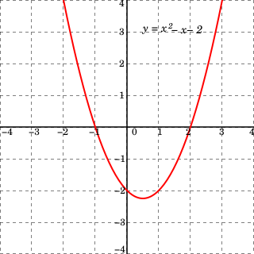

Little Schemer 2

What are expressions?
As mentioned previously, functional programming, as opposed to procedural or imperative programming, emphasizes functions as the computational building blocks. Key is how functions in functional programming languages behave as if they were true mathematical functions. This is a great advantage—for reasons we will explore in detail as we progress.
Computer programming has advanced from the early days of literally having to give commands imperatively, one after the other, to the electronic organs of the CPU1 CPU: central processing unit, the calculation “brains” of a computer. (and the memory attached to it) in order to, e.g., perform simple addition or subtraction. For an analogy, imagine having to tell your body exactly how to breathe. That would be very restricting, taking up so much of your attention and concentration. And so your brain simply handles breathing semi-automatically at a lower, unconscious level. Similarly, in order to be more productive, programming languages have striven over the years to abstract the gnarly details of getting data and calculations handled away from having to literally tell the CPU or the “bare metal” each and every low-level step of a calculation.
For the time being, let’s consider a quick, ad hoc definition of a
function and then later really take the idea of a function apart and
analyze it in a higher math way
…more about relations in a higher math way later… set as in set theory sets. Some very formal texts call a set a class by the way. ⇲ A
function is a relation between a set whose elements are inputs
(the domain) and a set whose elements make up outputs (the range)
with the key property that each input is related to exactly one
output.2
This important quality of a function was touched on in the
preface.
Let’s also look at a function in terms of variables. Recalling the
usual pre-algebra way of denoting a function, i.e., \(y = f(x)\), the
symbol \(x\) stands for input and is called an independent variable,
while the symbol that stands for output, \(y\), is called a dependent
variable. And so the dependent variable of the range depends on the
independent variable of the domain.3
In pre-algebra a function is typically graphed with the
horizontal axis representing the independent variable and the
vertical axis representing the dependent variable.

In this idea of the function, y is the dependent variable and x is
the independent variable.
At this point in our journey we need to be clear about what is meant
in the math and CS literature by an expression—a mathematical
expression, an algebraic expression, et cetera. Then we will launch
into the next topic in TLS, namely s-expressions or symbolic
expressions, which are the building blocks of Scheme programs. Here’s
Wikipedia’s first-paragraph definition of a mathematical expression
⇲ In mathematics, an expression is
a written arrangement of symbols following the context-dependent,
syntactic conventions of mathematical notation. Symbols can denote
numbers, variables, operations, and functions. Other symbols include
punctuation marks and brackets, used for grouping where there is not a
well-defined order of operations.
…which is admittedly a bit dense and too general. But then the
article gives the example \(7x - 5 = 2\) where the whole thing as one is
considered an equation, while the left- and right-hand sides by
themselves are called expressions. And then the example of the
inequality \(8x - 5 \ge 3\) is referred to as a formula, and again, the
\(8x - 5\) part and the \(3\) part are expressions. But can equations can
be expressions too? After all the basics of an expression, i.e., the
“symbols” and “syntactic conventions,” are maintained.
One important trait of expressions (which is very important in functional programming) is that expressions may be evaluated or simplified to find equivalent values. The expression \(8 \cdot 2 - 5\) simplifies to \(16 - 5\) and then evaluates to \(11\). And sometimes a mathematical expression comes from transcribing a statement, e.g., “One number is six more than half of another number.” So if we represent the “other number” as \(a\) then a mathematical expression of this statement could be
\begin{align*} \frac{a}{2} + 6 \end{align*}
Let’s give a simplified, more direct definition of an expression
⇲ An expression is a mathematical
phrase that can contain ordinary numbers, variables such as \(x\) or \(y\)
and operators such as the symbols for add, subtract, multiply, divide,
and equals.
And so an equation (built around an equals sign) can be an expression
after all.4
What follows was taken from this reddit discussion.
If an expression is, as restated from above,
any way of combining numbers and
symbols in a way that is syntactically correct, then
- \(1 + 2\)
- \(3x - 5\)
- y = x
are all expressions—while \(5+ = 7\) means nothing because its syntax is garbled. And so an equation is an expression that expresses equality.
But then is a function an expression? The expression \(y = f(x)\) tells us that for the function \(f\) we have \(x\) as the independent variable and \(y\) then depends on which \(x\) is being evaluated.
𝖟𝕭: \(y = e^x\) is an expression because, first and foremost, it is syntactically valid; and it is an equation because of the equals sign. But is it a function? Just in this form we haven’t decided which is the dependent or the independent value. We could plug in (a) value(s) for \(y\) and get an \(x\) or plug in (a) value(s) for \(x\) and get a \(y\) as it is now written. To be more specific we could write it as
\begin{align*} y = f(x) = e^x \end{align*}and now we have established which is independent (\(x\)) and which is dependent (\(y\)).
𝖟𝕭: \(7a + 2b + 3c\) is clearly an algebraic expression but it does not have to be a function, since the symbols \(a\), \(b\), and \(c\) don’t necessarily have to be variable inputs, rather, constants previously assigned numerical values. But if \(a\) is indeed a dependent variable we would have the function
\begin{align} f(a)=7a+2b+3c \end{align}⥤ Food for thought: \(a\) is a dependent variable in (1) and the symbols \(b\) and \(c\) must then be constants. But could more than just \(a\) be a variable? If so, how could we express this? How about as a function of multiple variables?
\begin{align} f(a,b,c)=7a+2b+3c \end{align}
(2) tells us all three letter symbols stand for variables. Later when
we define what a Cartesian coordinate system really is, we’ll also
touch on the world of combinatorics, or the science of counting or
sampling combinations of different sets, which is really what’s going
on with this function-expression thingy.
Fazit: German meaning in conclusion
summing up
\(\mathfrak{Fazit}\): We will indeed say all
functions are expressions.
S-expressions TLS-style
Now we will discuss the idea of a symbolic expression or s-expression as Lisp and Scheme mean it. On page 4 of TLS we suddenly see, with no explanation or warning, the term s-expression
Βιγ Σξηεμερ: Is it true
that this is a list?
(atom turkey) or
Λιττλε Σξηεμερ: No,
because these are actually two s-expressions5
We will use sexp the abbreviation for S-expression.
not enclosed by
parentheses. The first one is a list containing two atoms, and the
second one is an atom.
Again, the discussion progresses by backing into the definition of
sexp’s by first giving key examples. This method is the reverse of
what higher math usually does. How? Because higher math will typically
state a rule, a proposition fundamental to the topic at hand, and then
proceed with discussion and examples of what the fundamental law
implies, i.e., what facts and uses unfold, are necessitated by that
law. For example, a higher math text might state
The set of counting numbers, the
natural numbers, \(\mathbb{N}\), is closed under binary operators
addition and multiplication.
Then a discussion would ensue as to why \(\mathbb{N}\) is not
closed6
A set of elements is closed under a binary operation if by
applying the operation to any two elements of the set the result is
also an element of the set. For example, \(2 + 2\) is \(4\), which is also
an element of the natural numbers \(\mathbb{N}\).
under, say, subtraction and division by asking
if the operation \(5 - 6\) result in an
element of \(\mathbb{N}\)? No, because evaluating the
expression \(5 - 6\) results in \(-1\) and \(-1 \notin \mathbb{N}\), rather, \(-1
\in \mathbb{Z}\) which is the set of all integers, i.e., positive and
negative whole numbers along with \(0\).
Rather than copy the Big/Little Schemer chat verbatim, we’ll just give the examples directly
𝖟𝕭: ((atom turkey) or) is a list because the two sexp’s are grouped
completely inside parentheses.
𝖟𝕭: xyz is an sexp because all atoms are sexp’s.
𝖟𝕭: (x y z) is an sexp because it is a list.
𝖟𝕭: ((x y) z) is an sexp because all lists are sexp’s.
𝖟𝕭: (how are you doing so far) is an sexp because it is a collection
of sexp’s enlosed by parentheses.
𝖟𝕭: (((how) are) ((you) (doing so)) far) is a list because it
is a collection of sexp’s enclosed by parentheses.
𝖟𝕭: The list (((how) are) ((you) (doing so)) far) has three sexp’s which
are ((how) are), ((you) (doing so)), and far.7
At this point you might be getting lost in all the
parentheses. Don’t worry, Emacs and other editors for Lisp and Scheme
have parentheses-matching highlighting so you always know which
enclosing set of parentheses you are in.
So it’s obvious that Scheme is organized into sexp’s. But why, how?
S-expression and symbols
The first part of the term s-expression is symbolic, but what is
meant by symbolic? Obviously, symbolic is an adjective that means
whatever it is referring to has symbol-like
characteristics. Wikipedia starts its article on mathematical symbols
with this simple and probably too general definition
A mathematical symbol is a figure
or a combination of figures that is used to represent a mathematical
object, an action on mathematical objects, a relation between
mathematical objects, or for structuring the other symbols that occur
in a formula. As formulas are entirely constituted with symbols of
various types, many symbols are needed for expressing all
mathematics.
Before we start going around in circles, what is meant by “figures” is,
e.g.,
- decimal digits, i.e., \(0\), \(2\), \(3\), …
- Latin, Greek, Hebrew alphabet characters, i.e., \(a\), \(b\), \(\mathbb{C}\), \(\beta\), \(\rho\), \(\Gamma\), \(\beth\), \(\aleph\), et cetera, which can have different weights and typefaces for different uses.
- Various operation and binder symbols, i.e., \(+\), \(-\), \(\div\), \(\sum\) for summation, \(\int\) for integration, et cetera.
Touching for a moment on the philosophical, we may stop and marvel at how humans have come to use and manipulate symbols, especially the use of language. With human language we employ words which symbolize real things or abstract concepts. A word can be considered a placeholder for an object or idea. Some experts say humanity has only possessed language as a set of words-as-placeholder-symbols for forty thousand years. Others say from sixty to one-hundred thousand years. And yet we surely have been anatomically Homo sapiens longer than we’ve had language. What did we do with our big brains before we had language?8 …some suggest telepathy… Obviously, we relied to some extent on intuitions, i.e., we would see two piles of nuts and only have vague intuitive notions that there were two piles and that they might differ in size… But if we just analyze that last sentence we can begin to appreciate how powerful formal symbolic language can be. Whole logic systems spring to life once we have set up symbols to stand for things and ideas. Hence, it’s no wonder computing has been called the manipulation of symbols.
Here’s a quote from math logician Raymond M. Smullyan’s book The Tao Is Silent
The knowledge of the ancients was perfect. How perfect? I will tell you. At first they did not yet know that there were things. This is the most perfect knowledge; nothing can be added. Next they knew things but did not yet make distinctions between them. Next they made distinctions between them but did not yet pass judgements upon them. When judgement was passed, Tao was destroyed. With the destruction of Tao, individual preferences come into being.
So is Professor Smullyan saying ignorance is bliss?
Yes, the rabbit hole of language and symbolism goes deep. But let’s
come back to what is meant by a symbol in the computer
world. Basically, a symbol in a computer program represents a place in
the computer’s live memory. As we’ve mentioned before, Assembly
language was the first attempt to represent the various computer
commands and locations in a symbolic way with labels for particular
actions and places in memory. Down through the years symbolic
computing has kept advancing by abstracting more and more of the
low-level computing away through symbolic representations. Again, this
is declarative rather than imperative programming.
Hands-on Scheme
The version of Scheme we will primarily use is Guile, which is the official extension language of the GNU project. A Guile program can be compiled to run stand-alone like any piece of executable software; but we will almost exclusively, real-time interact with the “virtual machine” interpreter of Guile through the REPL or the read-evaluate-print loop user interface. Below we see a screenshot of a live interactive Guile REPL session
…which is similar to Linux command line interface, the big difference being that a Scheme REPL is the visible human input/output interface to a live Guile Scheme virtual machine “session.” How do we run code with a REPL?
- By typing it directly into the REPL as in the picture above,
- by loading a file containing Scheme code into the
REPL session, e.g.,
> load myfile.scm, - by evaluating org-mode Babel code blocks in an org-mode buffer as seen directly below
#+begin_src scheme :session *littleschemer* (define pi 3.141592654) (format #t "pi: ~a" pi) #+end_src
We will explore Scheme code through liberal use of org-mode Babel code blocks. Babel code blocks like this interspersed throughout an Emacs org-mode text file is an excellent form of literate programming.
In the code block example above we see Scheme code that will assign a
value to the symbol pi. To evaluate this code we place the cursor
inside the code block and enter C-c C-c, which produces
#+RESULTS: : pi: 3.141592654
As we see in the code block’s heading above, the two contained
expressions will be evaluated in a specific REPL session named
*littleschemer*. Next, let’s not define a symbol, rather, just
feed the session a symbol9
From now on for visual purposes we will forego the code block
wrappers , i.e., #+begin_src scheme ... #+end_src, and just display
the code and the results. When in doubt about exactly what the code
block wrapper should be, consult the raw version of this page.
'mysymbol
mysymbol
As we see, Scheme just gives back the unassigned symbol—and nothing
further happens. However, that apostrophe before the symbol 'mysymbol
is not part of the symbol mysymbol. In the Lisp/Scheme world this is
known as quoting, which turns anything quoted into literal
data. Here’s a more verbose version of quoting with the same effect
(quote mysymbol)
mysymbol
Why quote? Because Scheme considers any unquoted symbol as assigned
and tries to retrieve or run it. However, when we quote an sexp, we’re
telling Scheme to treat it as just data. For example (define pi
3.141592654) is an assignment, and once evaluated, pi is known
during the life of the REPL session as the symbol for the value
3.141592654. However
'(define pi 3.141592654)
(define pi 3.141592654)
produces just the literal sexp (define pi 3.141592654). This “trick”
is a powerful tool in functional languages. Why? Imagine passing a
whole piece of real code A as input to another piece of code
B. Consider this
(define pi-def '(define pi 3.141592654)) (format #t "pi-def: ~a" pi-def)
pi-def: (define pi 3.141592654)
Lots and lots more about this “trick” soon. It’s literally the backbone of
functional programming.
Building a function
So we’ve seen how (define pi 3.141592654) and '(define pi
3.141592654) are two different things. As we saw, the second example
is quoted, which makes the whole sexp one big chunk of static,
literal data. Good, but as opposed to what exactly? Intuitively we
can guess that the first unquoted sexp is, yes, defining pi to be
3.141592654. How exactly does this work?
All Scheme code takes the form of
lists, and the first sexp in the list—unless the list is
quoted—serves as the function or operator, while the rest of the
sexp’s in the list are the parts the function or operator will work
on: (function sexp1 sexp2 ... sexpN)
𝖟𝕭: (+ 2 3) …note prefix notation
𝖟𝕭: (abs -4) … first sexp is always a function or operator
𝖟𝕭: (+ (* 2 3) 8) … simplify the deepest sexp outward
𝖟𝕭: (+ 3 4 5 1) … addition prefix notation can take multiple
arguments
In each of the above examples the very first item in the list is the
function/operator. For the arithmetic operators like +, *, et
cetera, we see prefix notation with possibly multiple arguments. Now,
let’s see a full Scheme function that takes one argument and when
evaluated, produces output10
Anything following a “;” is a comment for the rest of that
line and is not evaluated, rather, just passed on. However, with
org-mode Babel’s literate programming we need far less in-code
comments since we can make all the commentary we need before and after
the block.
(define (celsius->fahrenheit celsius) (+ (* 1.8 celsius) 32)) ; figure out temperature conversion (format #t "fahrenheit: ~a" (celsius->fahrenheit 20)) ; print answer
fahrenheit: 68.0
Of the two main sexp’s in the code block above, the first
(define (celsius->fahrenheit celsius) (+ (* 1.8 celsius) 32))
is a typical nested list building a function. In this example the
general form is (define (function-name arguments)
(calculating-code)) which has three main sexp’s, the last on the next
line and indented for better reading. Note how the calculation code is
a prefix notation multiplication nested inside a prefix notation
addition. In the format sexp we call the function
celsius->fahrenheit with argument 20.
But we’re getting ahead of ourselves a bit. Let’s get back to
S-expressions.
S-expression lore
Symbolic programs are programs where symbolic expressions are manipulated to gain useful output. But what does this actually entail, how do we manipulate symbolic expressions? With Lisp and Scheme everything is housed in lists—both data and code alike. So far we’ve been nudging around how to build working code from lists. Now we’ll explore more deeply what a list as an sexp really is. We’ll start with a more formal look at s-expressions or sexp’s.
Technically, formally an sexp is one of two possibilities
- an atom, or
- a cons cell
So we’ve seen the atom before. Recall, an atom is just a symbol object
thing standing alone by itself. In the Scheme world, atoms can do two
things: stand alone or be in a list. And we saw how just one atom
surrounded by a set of parentheses becomes a list. We then saw how
multiple atoms surrounded by a set of parentheses is also a list; how
a set of parentheses surrounding a mixture of atoms and other lists is
a list … we saw that lists can be nested in lists nested in lists,
ever deeper. Good. But calling an atom a sexp doesn’t get us very
far. As we saw earlier, we could type 'myatom into the REPL—and
get myatom repeated back to us, i.e., no real computation is
happening yet.
Let’s consider the second type of sexp given above, the cons
cell. This is where the action starts. A cons cell is what a Scheme
list really is, so let’s look at how a Scheme list comes into
existence.
We’ve touched on the idea of an ordered pair before with Cartesian coordinate pairs where the order of which is first and second matters…
A cons cell is an ordered pair of
the form (sexp1 . sexp2).
Hmm, still rather theory-bound. So what’s the connection between these
ordered-pair cons cells and lists? The answer is we use Scheme’s
primitive function cons to create cons cells by fusing two sexp’s
together. Let’s see an example where two sexp’s as atoms are consed
together
(cons 1 2)
(1 . 2)
Scheme gives us back a cons cell.11 This is also referred to as dotted pair. Let’s play with this idea
(cons 1 (cons 2 3))
(1 2 . 3)
and
(cons 1 (cons 2 (cons 3 4)))
(1 2 3 . 4)
Except for that last dot between 3 and 4, this looks like a
regular list of numbers, no? So what is the difference between (1 2 3
. 4) and the regular list (1 2 3 4)?
We seem to be exampling our way into how lists are built in Scheme, namely, a bunch of stuff gets consed together. Let’s try this again and watch exactly which parentheses are enclosing what
(cons (cons '(five is a nice number) '(5)) '(but so is six))
(((five is a nice number) 5) but so is six)
What happened this time? For one, we simply embedded one consing
inside another. But this time the inner and outer cons consed the
sexp’s into a real list—and the cons dots went away. Why and how?
Let’s do more examples
(cons 1 '())
(1)
(cons 1 (cons 2 (cons 3 '())))
(1 2 3)
Now we see cons producing regular lists without any cons pair
dots. Technically, under the hood, we still have our nested lists of
consing—which means (1 2 3) is really (1 . (2 . (3 . NIL)))
where in Scheme NIL is '() or the empty list. We call (1 2 3)
the syntactic sugar version, i.e., we’re given a more visually
friendly, uncluttered version of a consed-together list.
So (1 2 3) is really just a visually improved version of (cons 1
(cons 2 (cons 3 '()))).12
Realize of course that
(1 . (2 . (3 . NIL)))
is just the dotted symbolic way of expressing
(cons 1 (cons 2 (cons 3 '()))).
The dotted version doesn’t work as actual Scheme code.
Awkward looking as the naked version
is, it shows the details of how we’re doing a particular sort of
connecting or associating 1, 2, and 3 together. But it’s
probably not apparent why we need to cons-truct a list this
way. Let’s take a short “math holiday” to unravel this.
⌜
⥤ Math Holiday! … working binarily 13
This Wikipedia article on binary operations is quite
abstract-formal, but we’ll be getting into this lore meticulously as
we progress. It, like all of higher math, assumes set theory, which is
also the basis of much computer science theory.
Back in grade school when we were first being conditioned to perform arithmetic (rather than actually learning anything of the art of mathematical abstraction), we would see a stack of numbers like below and be told to “add them up.” But strictly speaking, addition is a binary operation, meaning only two numbers can be added at a time, not all of these numbers at once
\begin{align*} \require{enclose} \begin{array}{r} 1 \\[-3pt] 2 \\[-3pt] 3 \\[-3pt] 4 \\[-3pt] + \; \underline{5} \\ 15 \end{array} \end{align*}
Doubtful that anyone can read the Addition Wikipedia article and not
learn something they didn’t know about good old addition. For example,
when we tackle a stack of numbers like above we are actually adding
only two of the numbers at a time, i.e., two inputs produce one
output. So let’s start at the top with \(1 + 2\), which is \(3\). We then
“carry along” this temporary result and add the next number \(3\) to it,
and so on. In reality after that first binary operation of \(1 + 2\),
the result \(3\) becomes the augend, while the next number \(3\) becomes
the addend. The intermediary total of this sum then becomes the next
augend—and so we progress down the stack reassigning the latest sum
to the augend and adding the next addend to it. This is how many
digital logic calculations are done. Lots more later.
⌟
Now with a refreshing math holiday under our belts it should be clear
that cons as a binary operation must operate similarly, e.g., there
is no such thing as (cons 1 2 3),14
Some Scheme REPLs will give the error wrong number of
arguments because it was expecting exactly two inputs.
rather, cons is a binary
operator taking one thing and consing it together with one other
thing. This is repeated until done everything is consed together into
a finished list.
𝖟𝕭: When we see nested cons operations, e.g., (cons 1 (cons 2 (cons
3 '()))), we’re seeing precedence-wise15
precedence is the order in which a simplification
follows. Parentheses are usually the highest precedence, e.g., \(4 \cdot
(2 + 3) = 20\) because by parenthesizing the \((2 + 3)\) we created
precedence over the multiplication.
the initial binary
operation of (cons 3 '()) which is the list (3). This is
embedded in (cons 2 (3)) which evaluates to (2 3), which is again
embedded in (cons 1 (2 3)) resulting in (1 2 3). Thus, creating a
real list with cons means consing a sexp onto a real list. Also,
cons can only cons two sexp’s at a time.
It may seem too soon to go on holidays again, but let’s do another math holiday anyway!
⌜
⥤ Math Holiday! … a brief, gentle
intro to recursion
Recursion is a central idea in math and CS. Let’s take a quick theoretical look before we actually start doing it with Scheme code. Consider this simple summation of the natural numbers \(\mathbb{N}\)
\begin{align*} \sum_{i=1}^n i = 1 + 2 + 3 + \ldots + (n - 1) + n \end{align*}This simply sums all the counting numbers until \(n\). We can also write a formula for summing \(\mathbb{N}\) recursively
[continuation soon…]
⌟
A linked list is…
In the world of computer science data structures, a list is more
commonly thought of as a linked list. For (cons 42 (cons 69 (cons
613 '())) or (42 . (69 . (613 . '()))) we see the three individual
cons cells in the image below
(42 69 613).and a handy ascii representation would be
*---->*---->*---->NIL | | | v v v 42 69 613
In the Lisp-Scheme family we’re not so concerned that this is a
linked list, since the actual internal structure of a list doesn’t
require any knowledge of pointers as does a language like C. For
C/C++ programmers these diagrams say that a location in memory for a
cons cell with two “compartments” contains a pointer in the first
compartment to, e.g., 42, while the other compartment contains a
pointer to the memory address of the next, the adjoining cons
cell. But again, in Scheme we will never deal directly with actual
pointer memory addresses. Nonetheless, with our pointer-based diagrams
we have a train-looking thing with a NIL or '() as the
caboose. What would just (cons 'b 'c) or (b . c) look like
diagrammatically? It would in fact be a single cons cell
(cons 'b 'c).
Here we see the right and left compartments named, the left is called
the car and the right is called the cdr compartment. These names
come from many decades ago when Lisp was first developed and deployed
on a mainframe. But they are also Scheme primitive operators like
cons. So if (cons 'b 'c) produces (b . c) then
(car (cons 'b 'c))
b
and
(cdr (cons 'b 'c))
c
And so they are operators that surgically remove the head and the
tail of a cons cell. Let’s try this again with (cons 42 (cons 69 (cons 613 '()))) or
sugared (42 69 613)
(42 69 613) with car and cdr.(car '(42 69 613))
42
and
(cdr '(42 69 613))
(69 613)
Did this surprised you? Again, car returns the contents of the first
element of the list, i.e., the head of the list; and cdr returns
the tail or the rest of the list. Let’s look at cdr without
syntactic sugar
(cdr (cons 42 (cons 69 (cons 613 '()))))
(69 613)
As we see, Scheme throws back in the sugar, but what happened is the
tail of (cons 42 (cons 69 (cons 613 '()))) was returned, i.e.,
(cons 69 (cons 613 '())) \(\rightarrow\) (69 613). Let’s now reverse this
(cons 42 (cdr '(42 69 613)))
(42 69 613)
Here’s another example
(car '(((five is a nice number) 5) but so is six))
((five is a nice number) 5)
and
(cdr '(((five is a nice number) 5) but so is six))
(but so is six)
⌜
⇲ Try to glue ((five is a nice
number) 5) and (but so is six) back together with cons
⌟
So is (b . c) a true, proper list? No, it is called an improper
list or a dotted list since we have just a single cons cell with 2
in the cdr position. The final cdr position of the last cons cell
must be consed with the nil or the empty set. By this definition
(cons 1 '()) is a proper list, but something like (a b c . d) has
as the last cdr d which is not nil, i.e., '().
(cons 1 '())
(cons 1 (cons 2 (cons 3 '())))
(list 1 2 3)